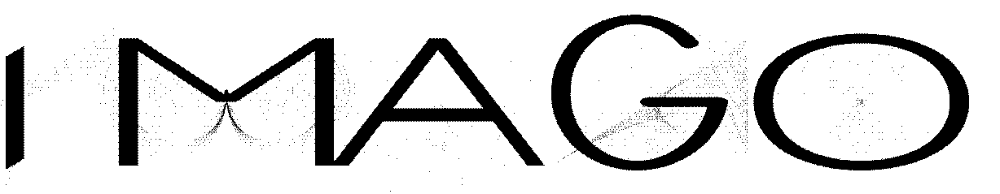

MF SHAKER
MF. SHAKER by Niklas Weisenbach
readme: MF. Shaker is a typeface written in the typographic description language METAFONT. Its design draws inspiration from stencil lettering found in a book called “Shop Drawings on Shaker Furniture
and Woodenware Volume 1”. As the letters were scanned at various scales, they took on differing stroke widths. These subtle inconsistencies – combined with a few imperfections – give
MF. Shaker its distinctive personality and handmade feel.
Currently, MF. Shaker supports a basic character set available in six cuts and as Outline-Fonts (.ttf):
1/4 INCHES (+), 1/6 INCHES (+),
and 1/8 INCHES (+).
In addition to these core cuts, there is a alternate cut created using a different pen: 2/6 INCHES (+).
*+ stands for a slanted cut of 12.5 degree
PK GERAET
PK Gerät by Paul Lu Kellert
readme: MF. Shaker is a typeface written in the typographic description language METAFONT. Its design draws inspiration from stencil lettering found in a book called “Shop Drawings on Shaker Furniture and Woodenware Volume 1”. As the letters were scanned at various scales, they took on differing stroke widths. These subtle inconsistencies – combined with a few imperfections – give MF. Shaker its distinctive personality and handmade feel. Currently, MF. Shaker supports a basic character set available in six cuts and as Outline-Fonts (.ttf): 1/4 INCHES (+), 1/6 INCHES (+), and 1/8 INCHES (+). In addition to these core cuts, there is a alternate cut created using a different pen: 2/6 INCHES (+). *+ stands for a slanted cut of 12.5 degree
Download Typefacewrite me
Write me by Lohann Poasevara
Write_me is inspired by handwriting letters. I wanted to reproduce some letters forms i learn at school, just the way Metafont reminds me mathematics class i had about coordonates. This font highlight this am biguity between a human and a no-human connections. Also the fact that computer can‘t «hand» writing something. I made thoses letters hard to connect well between them, a bit like a doctor‘s unreadable hand writing. Here you will find a regular, italic regular, extralight and bold version.
Download TypefaceKNIGHT PLAYGROUND
Knight Playground by Jiaxuan He
Knight Playground is a monospaced typeface which exhibits a clear-cut appearance with slight handwritten features. It serves both as a text and a display typeface with three cuts:
>> Light,
>> Regular
>> Bold.
Knight Playground has a wide range of use cases, such as from writing code for automatic pizza ordering to writing sophisticated texts from the middle ages about Arthurian legends.

Metamorph by Finn Milbrandt
Metamorph is a METAFONT project developed at HfG Karlsruhe during summersemester 2025.
We revisited the programming language metafont, exploring the more or less abandoned tool to create our own typefaces. In my „Metamorph“ files, I combined type design and creative coding to create
ornamental type/illustrations that, in its three different weights resemble the process of metamorphosis, as observed in butterflies. These stages of development consist of
*Larva,
*Pupa,
*Imago.
The approach to merge conventional - „visual“ - design and elements of chance (uniformdeviate) and repetition (for-loops) lead to chaotic, ornamental elements.
BEKSO
BEKSO.01 by Alice Seefried
BEKSO.01 is a geometric typeface with subtle playful elements and a slightly futuristic feel. Its simple and clean structure makes it versatile for various design applications. The font works best as a display typeface, suitable for headlines and titles, but it also maintains readability when used in body text. Its balanced design allows for flexibility without compromising clarity. This is the first release of the BEKSO family. Maybe it will be further developed, with BEKSO.02 or different cut styles.
Download TypefaceX-Treme Serif
X-treme Serif by Nayeon Park
**X-treme Serif** is an experimental serif typeface developed using the Metafont programming language—a system for designing type with code and parameters.
It creates explosive, dynamic curves through adjustable variables like x-height, cap-height, and pen angle.
This is a **display typeface**, designed for impactful use in titles, headlines, posters, and other contexts where bold visual expression is key.
Metafont is a system developed by Donald Knuth that defines fonts through mathematical descriptions rather than traditional drawing.
It allows designers to generate letterforms by writing code, enabling flexible, parametric control over shape and structure.
**X-treme Serif Family**
Core x-height:= 5; cap-height:= 8; pen rotated:= 310°;
Lift x-height:= 5; cap-height:= 18; pen rotated:= 310°;
Overdrive x-height:= 15; cap-height:= 18; pen rotated:= 310°;
Burnout C1 x-height:= 15; cap-height:= 28; pen rotated:= 50°;
Burnout C2 x-height:= 15; cap-height:= 28; pen rotated:= 310°;
Whiplash C1 x-height:= 15; cap-height:= 38; pen rotated:= 180°;
Whiplash C2 x-height:= 15; cap-height:= 38; pen rotated:= 310°;
,,,,,,,,,,,,,,,,,,,,
( Set it on Whiplash!)
♪ ∧,＿∧ ( Then dance with me )
(´･ω･`) )) |/'''''''''''''''''''
(( ( つ ヽ、 ♪
〉 とノ )))
（__ノ^(＿)
----------------------------------
Designed by Park Nayeon, July 2025 Developed as part of the **Metafont** course by Paul Bernhard at HfG Karlsruhe. Version: 1.0
Download TypefaceBUGS
Bugs by Estella Staader
Bugs invites a more playful approach to things. By embracing the initially awkward controls of Metafont, a dynamic, frivolous, and somewhat disobedient display typeface came to be. Thick strokes, round shapes and and a mix of upper- and lowercase letters add to its mischievous character. Bugs dares you: go chill a bit. Touch some grass. Be amused by a bug on your computer and be amazed by a bug on your finger.
Bugs currently comes in one weight and consists of a mixed-case Latin letter set. Recommended use: any shenanigans you can dream up.
Posters
Metafont is a software and a chameleon of sorts. It allows a designer to describe typographic characters algorithmically for the very intelligence of a letter to “be captured in a way that permits us to obtain an infinite variety of related letters from the same specification.” Sounds daring?
Somewhen in the 1960s printed matter is typically typeset with metal letters. Setting these typographic chunks into lines of words, sentences and paragraphs, the composition of a single page seems a daunting task. — where is the O? Heck, i’ll just use a 0 — And when the first two humble volumes of The Art of Computer Programming by Donald E. Knuth are published, typesetters are faced with multistoried mathematical formulas of cryptic symbols, by the hundreds, and just a few dozen gifted ones are capable of composing such a technical text into a readable printed matter.
Later, in 1972, the second volume of The Art of Computer Programming is out of print and to be reissued. This time set with phototypesetting, an emerging technology rapidly replacing its hot metal counterpart. Still in its infancy, the new light-based technology produces a poor quality of printed formulas that leaves Donald deeply disappointed and wondering why one should spend six years in writing what nobody will be able to read. He sets out to tackle this problem on his own and designs a new digital typesetting system, “TeX”, accompanied by an independent font description system, “Metafont”. These softwares will become an instrument used by scientists around the world to facilitate the typesetting and publication of scientific papers. For Donald equations must “endure the smudge of the over-inked press onto the flimsiest of papers. They must not fade away on the drum of a laserprinter, nor under the not-so bright light of ancient photocopiers in the math library. The letters must not blur under the dimmest of lighting near the periodicals through the foggiest of trifocals; they must shine clearly through the forest of pen scratching during proofreading.”
Whether Metafont was and is an efficient candidate to meet these ambitious criteria remains questionable. But we will take its story as a starting point for this colloquium on: Metafont, its birth, its matter, and its arrogance. On four dates we will look further into the history of this font description language, put it to use and describe characters together — an O, or an 0, or… let's see. There will be code and we will move in the austere environment of the computer command line, so any existing knowledge of programming might proof helpful. But if you are neither familiar with code or nor a big friend of algebra, never fear, we will all be in the same boat together, full of mistakes.